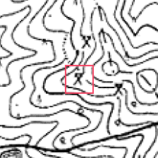
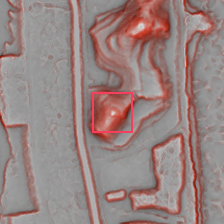
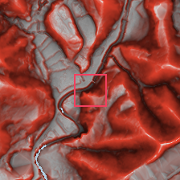
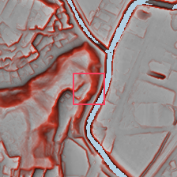

篠栗町・8方位完全閉合 山城主郭／古墳マウンド
Blind Wave-2 R8 discovery (`score=0.79`) in the Kasuya mountain corridor: `8.05 m` convex dome with `3.88 m` minimum drop across all 8 azimuth octants under unbroken forest canopy.
PALIMPSEST fuses Meiji–Shōwa imperial cartography (Jinrikisokuzu & Kyūhanzu)
with bare-earth 1 m airborne LiDAR Chiba Red-Relief to locate vanished shrines (⛩),
abolished mountain temples (卍), sub-canopy kofun mounds (∴), Sengoku
yamajiro fortifications (⛫), pre-war coal adits (⚒), and shogunal
nomadote earthworks (═) across the Japanese archipelago.
Blind Wave-2 R8 discovery (`score=0.79`) in the Kasuya mountain corridor: `8.05 m` convex dome with `3.88 m` minimum drop across all 8 azimuth octants under unbroken forest canopy.


Three pre-war `⚒` coal-mine symbols on `kjmapw:01` whose twin V-notched inclined drift-mine adit portals survive intact inside a narrow `40 m` forest buffer beside a modern golf course.


Isolated `5.95 m` bare-earth LiDAR mound cloaked under dense bamboo grove along the Onga River *yokoana* / *kofun* hillock chain, invisible on standard aerial imagery.


Edo-shogunate warhorse pasture embankment (`═`) cross-verified between NARO's `1880–86 Kanto_Rapid@z17` survey and `1 m` `dem1a` bare-earth LiDAR inside a surviving Shimōsa coppice.


Edo–Meiji *tatara* iron-sand hydraulic sluicing amphitheaters (`38°` theater scarps + dendritic tailing channels) resolved in `1 m` bare-earth LiDAR beneath reforested Chūgoku ridges.


Curvilinear Ryūkyū *gusuku* coral-limestone rampart enclosures (`13th–15th c.`) emerging through dense subtropical *gajumaru* canopy in `1 m` `dem1a` Red-Relief.
| Model Variant (100 m Spatial GroupKFold, N=808) | Macro ROC-AUC | Macro PR-AUC | Macro Best-F1 |
|---|---|---|---|
| 1. Historical Map Stamp + ResNet18 Only | 0.9163 | 0.7445 | 0.7438 |
| 2. Bare-Earth 1m LiDAR Red-Relief + Morphometrics Only | 0.7484 | 0.4508 | 0.4892 |
| 3. Naive Late-Fusion Dual-Branch | 0.9531 | 0.8129 | 0.8160 |
| 4. Proposed R8 Modality-Aware Dual-Branch (Core-6) | 0.9713 | 0.8491 | 0.8505 |
| 5. Strict Pure-Human Ground Truth OOF (N=647) | 0.9800 | 0.8746 | 0.8691 |
* Modality-aware routing enforces zero 2D map weight on purely topographic classes (castle_ruin ⛫ PR-AUC 0.8087, burial_mound ∴ PR-AUC 0.7851) while preserving sub-pixel imperial glyph precision on mine_quarry ⚒ (PR-AUC 0.9949) and suppressing 67 / 86 (77.9%) wide-area terrace-cliff & roof false positives out-of-fold.
Inspect raw Virtual Shizuoka airborne laser returns on Takatenjin West Ridge (PLMP-0001), wipe between
Red-Relief and Sky-View Factor in 3D WebGPU, and review the blinded synthetic earthwork injection trials
(08OC7981 & 08OC8838) and Swiss swissSURFACE3D pilot.